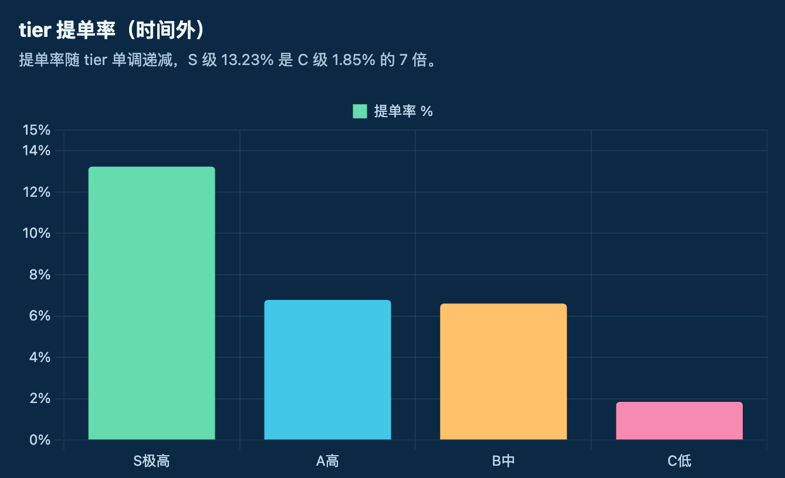
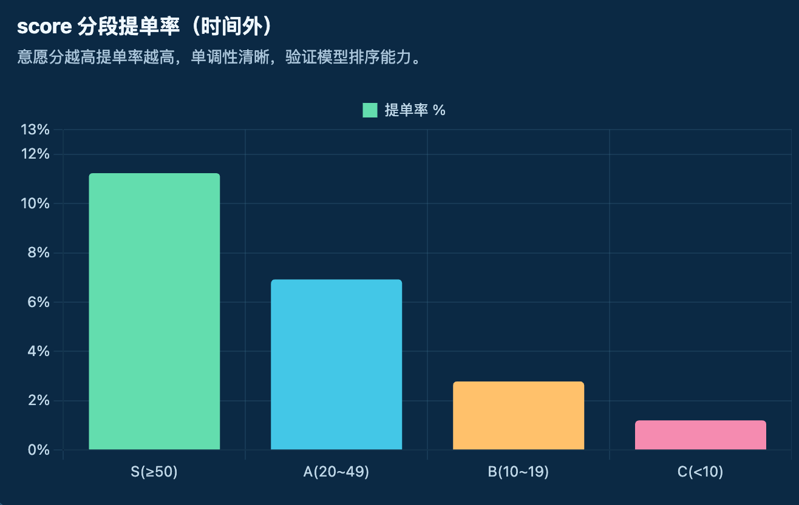
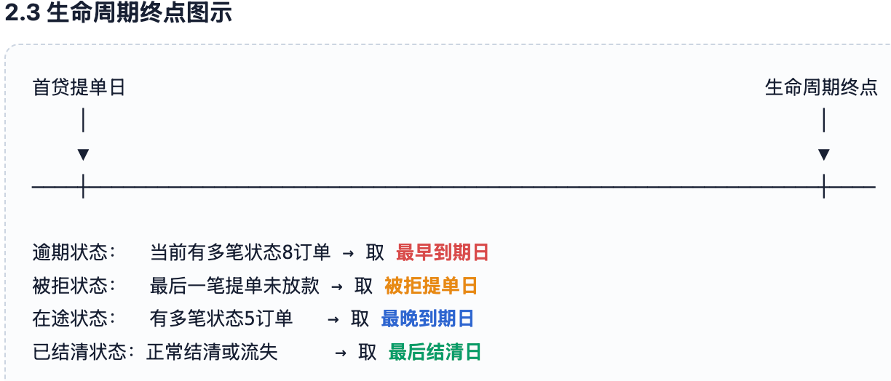
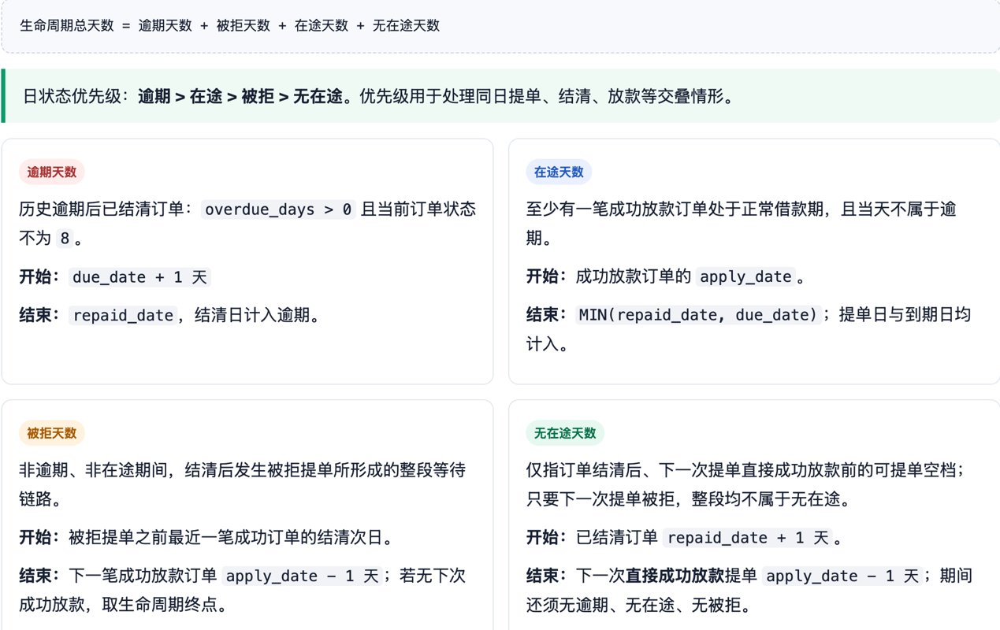
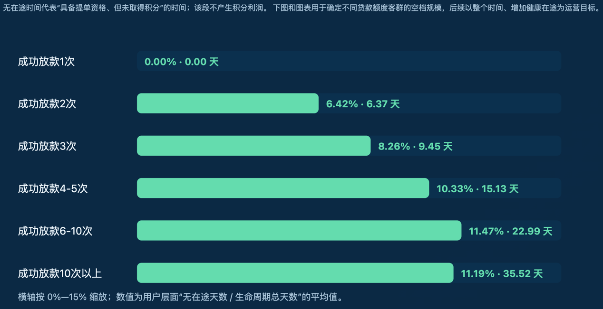
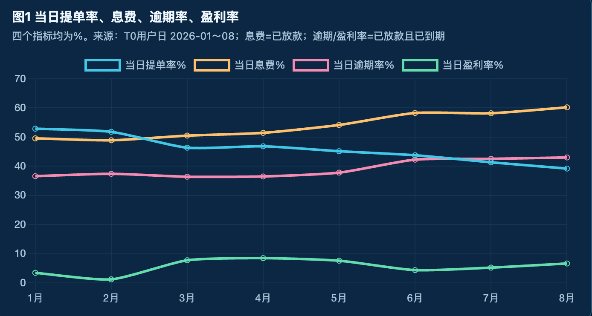
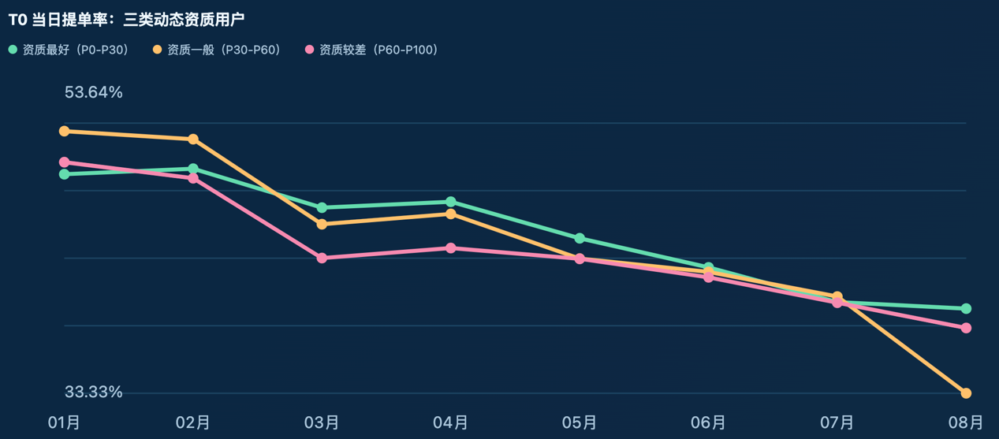
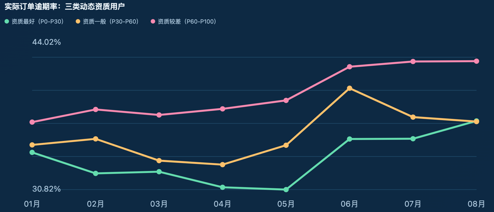
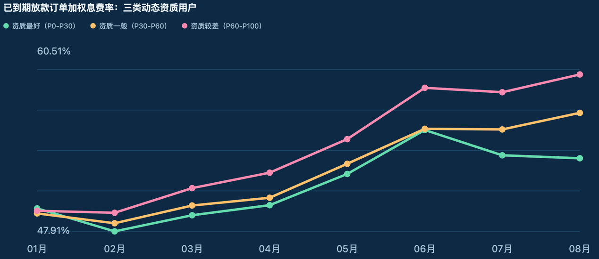
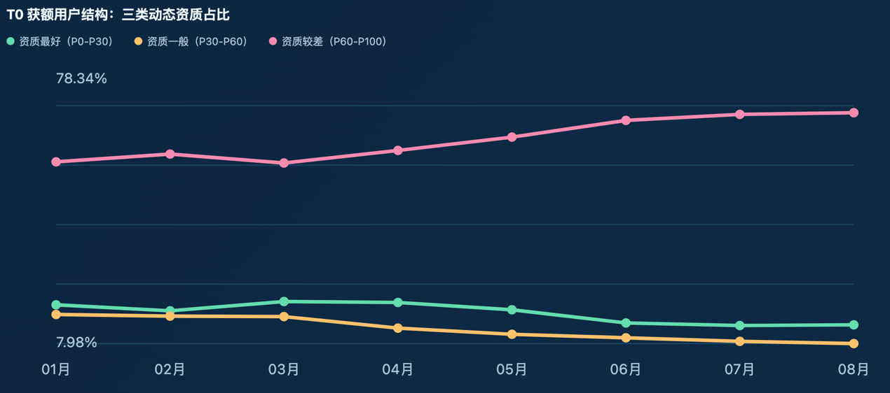

T7+ 用户召回策略迭代与经营框架总结
本报告整理召回策略、生命周期经营、T0 提单率阈值和动态资质分层四部分工作，明确当前验证结论与后续可执行方向。
一、核心结论
二、召回策略：从全量触达到意愿分层
策略演进逻辑
8 月 15 日前采用全量流失用户召回。对流失超过 180 天且 90 天未活跃的人群，两周提单率低于 1%，营销效率偏低。后续策略依次经历“高意向筛选触达”与“意愿模型分层召回”两个阶段。
阶段一：高意向筛选触达，降低营销成本
8 月 18 日起，先覆盖全量样本中 68.5% 的高意向用户，共触达 11,585 人。该批次在 26 天内获得 19.0% 提单率，且其提单人数覆盖整体样本提单人数的 96.3%。
高意向样本覆盖
8 月 18 日触达人群
26 天提单率
阶段二：仅触达新增活跃用户会漏掉未活跃的高意愿用户
对 8 月 18 日触达但未提单用户，后续曾按“新增活跃用户”进行触达。但若只召回一周内新增活跃用户，会遗漏大量未活跃但仍有提单意愿的 T7+ 用户；新增活跃用户的提单人数仅占全部提单人数约 40%—45%。
阶段三：以提单意愿模型替代单一活跃标签
因此，当前不再只按是否活跃召回，而是通过提单意愿模型评分进行分层。模型筛选后，仅召回 31.7% 的用户，即可覆盖总体提单人数的 83.2%。
模型筛选后触达用户占比
总体提单人数覆盖
原有周期策略


三、生命周期经营：寻找可转化的无在途时间
生命周期分析的目的不是只计算用户“存活多久”，而是定位其中可经营、可转化为新借款机会的时间。无在途时间不产生利润；将其转化为在途时间，才能增加借款次数与盈利。


| 当前用户状态 | 分类口径 | 生命周期终点 |
|---|---|---|
| 逾期 | 当前存在至少一笔逾期未结清订单。 | 多笔逾期时取最早到期日。 |
| 被拒 | 无逾期未结清订单，且最后一笔提单未成功放款。 | 最后一笔提单日期。 |
| 在途 | 有未到期在途订单，且不属于逾期或被拒状态。 | 多笔在途时取最晚到期日。 |
| 流失 | 无逾期、被拒、在途订单；最后结清后未再提单，且距统计日超过 7 天。 | 最后结清日。 |
| 正常结清 | 订单均已结清，且不属于上述状态；最后结清距统计日不超过 7 天。 | 最后结清日。 |

四、T0 提单率阈值：不能只看转化
降低无在途时间的第一抓手是提高结清获额后的提单率。但提单率提升可能依赖降息、让利或提额，也可能带来风险变化；因此需要在“转化、息费、坏账和盈利”之间确定可接受的阈值。

早期假设
息费增加带来的收入，可能暂时抵消部分坏账损失，因此盈利上升。
后期风险
当坏账损失增幅超过息费增益时，息费继续提高可能导致盈利下降。
客群结构假设
高息费可能加剧优质用户流失，导致留下的提单人群风险上升。
五、动态资质分层：验证客群结构变化
模型评估的是用户在“结清 0 在贷、获得额度”那一刻的动态资质，而非今天的静态资质。模型仅使用获额之前已发生的数据，避免使用获额后、提单后或尚未结清订单的未来信息。
| 环节 | 定义 |
|---|---|
| T0 快照 | 同一用户 20 秒内多次获额，仅保留订单编号最大的最后一笔；同一用户同日保留最早有效 T0 获额。vir_unix 转为 America/Belize 业务本地时间后再与订单本地时间比较。 |
| 训练标签 | 该次获额对应的下一笔成功放款订单到期时是否逾期；结清日为空、早于 2000-01-01 或晚于到期日，均视为逾期。 |
| 特征范围 | 获额前已结清订单的成功放款、历史逾期、金额、加权息费、贷款时长、上一笔订单表现和当次获额额度。 |
| T0 当日提单率 | 获额后同一自然日提交订单的用户数 / T0 获额用户数。 |




资质最好
资质一般
资质较差
六、下一步行动方案
高资质用户
优先验证降低息费是否能有效拉升提单率，并观察真实逾期与到期盈利变化；目标是提升高资质用户在提单人群中的占比。
一般资质用户
保持当前策略，持续观察意愿模型分层、提单率、到期逾期率和盈利的联动变化。
较差资质用户
避免高额优惠和提额，控制转化提升可能带来的风险外溢；以风险和到期盈利为约束。
基于上述判断的召回优先级
- 重点经营 T1 及之后未提单用户，缩短结清后的无在途时间。
- 优先对 T3、T5 用户召回，减少其进入 T7+ 的比例。
- 针对 T7+ 用户，以意愿模型筛选而非全量触达，兼顾覆盖和成本。
- 与策略团队共同验证：是否应为高资质用户提供更低息费的产品。
七、关联分析报告
| 主题 | 报告链接 |
|---|---|
| 新策略召回效果评估 | 召回触达模型效果评估报告 |
| 意愿模型分层设计 | 召回提单意愿模型设计说明与效果评估报告 |
| 意愿模型 V2 | 召回提单意愿模型 V2 优化分析报告 |
| 用户生命周期口径 | 用户生命周期定义与经营拆解口径 |
| 生命周期经营分析 | 首贷成功放款用户生命周期经营分析报告 |
| T0 动态资质验证 | 2026 年 1—8 月 T0 动态资质三层与提单率结构验证报告 |
| T0 行为、盈利与风险交叉分析 | T0 结清获额后行为提单盈利息费逾期交叉分析报告 |